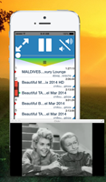
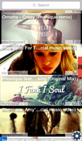
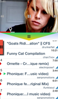
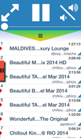
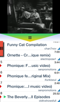

BERLIN - October 23, 2014 - Our electronic devices are becoming more powerful and more connected. There’s no reason they shouldn’t work together to do more than what a single one can do by itself. Clickr is the first in a series of apps that will try to bring person’s electronics together for the purposes of having fun and making work easier. Clickr allows it’s users to watch YouTube videos on their phones or their computers - they choose how to enjoy them.
    Clickr was designed, so users can focus on watching YouTube videos and have more fun. They don’t have to be constrained to just two modes - sit in front of a computer or use the small screen of a phone. They can sit on their couch for a movie or dance around to music videos, watch a cooking show from their kitchen or lay in bed on a lazy morning enjoying a TV show. With the easy to use playlist, the app can be a YouTube jukebox and with one swipe switch over to playing on the computer. Clickr is not an app users have to fight to get it to do what they want. It consists of two components, one on iOS and one on Mac. There are no complicated setup procedures. When Clickr is on a user’s phone, wherever they cary that phone, they can start using it within 30 seconds. Both parts of the system work automatically together without any intervention, all that is needed is that they are on the same local network. Custom network protocols for discovery and communication were developed to remove any burden from the user. The app is easier to use than even a computer based video player. Search, selection and playback are controlled directly with a finger - almost like manipulating real objects. It fully handles the whole experience from turning on the computer’s display when the user presses play to turning if off when playback is finished. Also there is fullscreen support for a full theater experience.
“A YouTube remote I actually want to use more than a couple of times, I use it now more than the other [YouTube] apps”, “I spend way more time watching YouTube now. I didn’t get out of bed until 11am [on sunday]” said Marco and Michi - beta testers.
Clickr is available now for $0.99 in the US app store and is priced accordingly in other countries.
Please visit ClickrVideo for more on the app.
Clickr is developed by RedHaze, a two person development team in Berlin, Germany.
Download the Press Release or the Press Kit